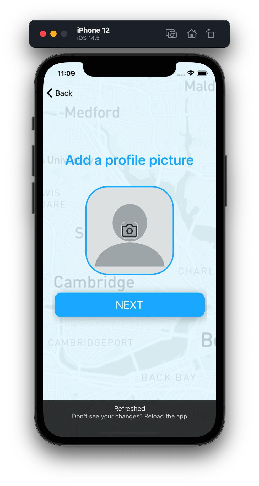
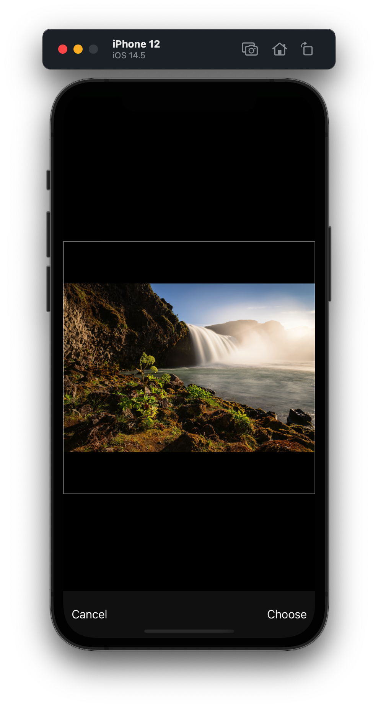
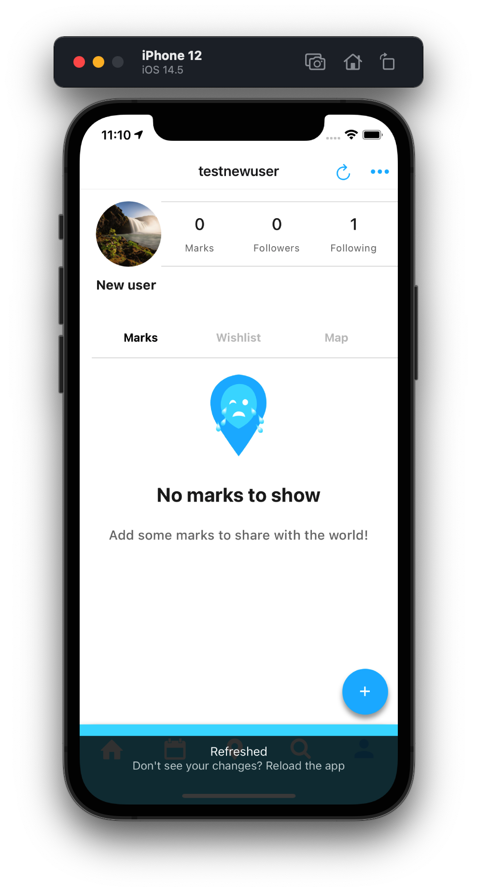

Markit Social
Preface
Markit is an AI-driven social event marketplace that helps people find things to do and make plans with their friends.The social networking startup was founded by Tufts University Class of '20 alumnus Jonathan Chang. As part of Markit's mission, we are striving to revive an isolated population emerging out of the COVID-19 pandemic and solve the complicated, multi-step process of finding new places to explore with your friends.
I joined Markit because I've been meaning to acquire some new skills to make me a more well-rounded data scientist and developer. Namely, I wanted to learn mobile development and recommender systems. However, instead of pursuing the typical cycle of "acquire a new skill through a MOOC, apply the new skill in a business context, and repeat," I decided to throw myself into the deep end by joining startup that is growing at a rapid rate. I believe that facing real-world challenges head on with real-world data is the best way to simultaneously grow and contribute.
I work on the small but mighty software team within the organization, taking on front-end tasks, back-end tasks, as well as integrated data science tasks. As a newbie to mobile development, I am thoroughly enjoying all aspects of this experience!
I work on the small but mighty software team within the organization, taking on front-end tasks, back-end tasks, as well as integrated data science tasks. As a newbie to mobile development, I am thoroughly enjoying all aspects of this experience!
Details
Date: September 2021Close Team Members: Jonathan Chang, Peter Chang, Caleb Ledi, Tan Yong Quan, Cindy Siu
Related: #Startup #SocialMedia #SocialNetwork #DataScience #MobileDev #RecommenderSystems
Tech Stack: React Native, Redux, Google Firebase
Contributions
Add step to registration to add profile picture



Implement updated create event designs
Implement backend cloud function(s) to recommend events to users based on user-tested logic.